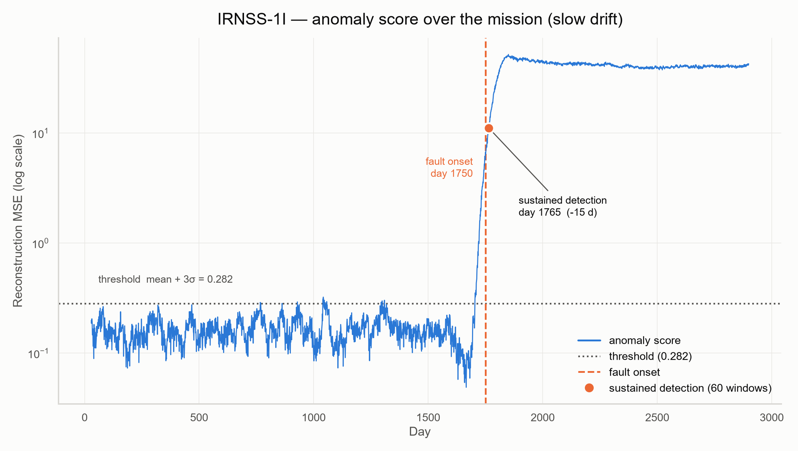
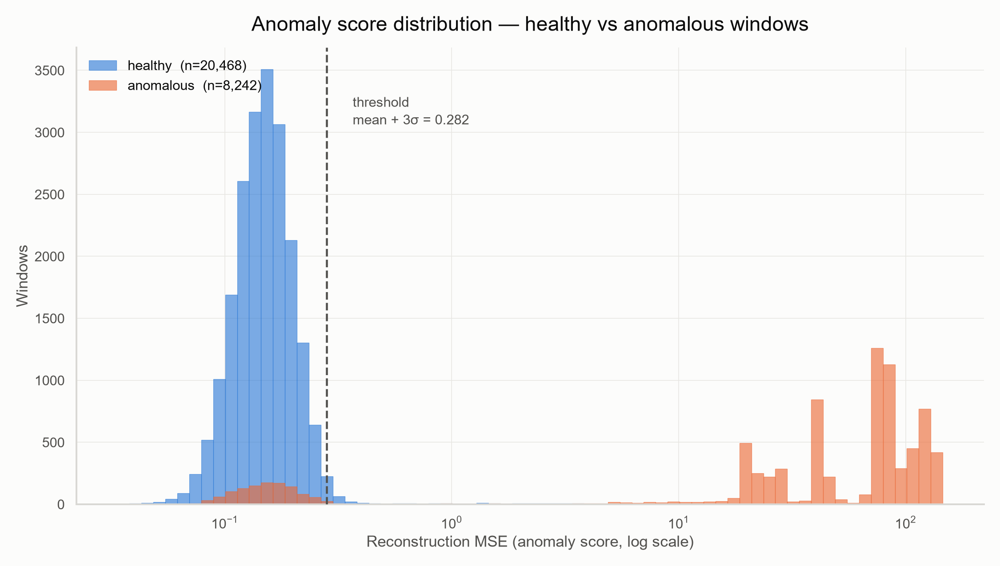
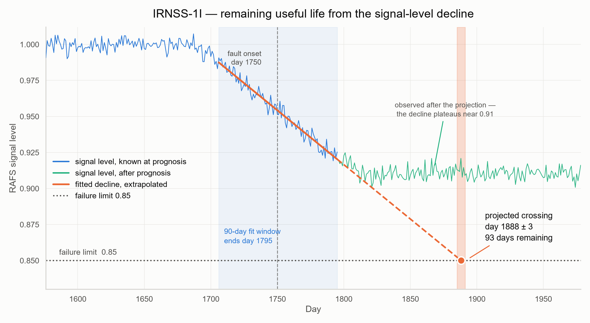
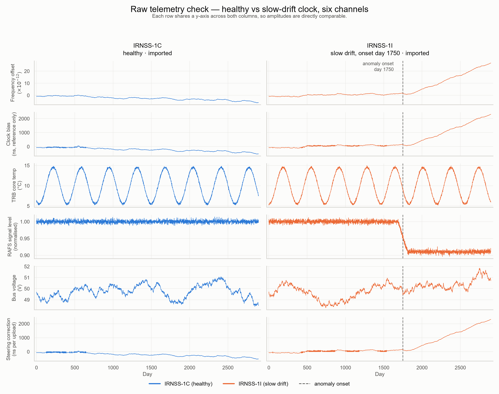

Projected from the RAFS signal-level decline to the 0.85 limit.
These are independent measurements. A clock can look highly abnormal yet decline
slowly, or look moderately abnormal and decline fast. Operators need both: status sets
investigation priority, remaining life sets maintenance schedule.
Long-running degradation. The clock has been sliding out of spec since early in the mission, so by the time it is flagged it has already been unhealthy for a long stretch.
Fitted decline
−1.00 × 10−3 per day, fitted over the 90-day window ending day 937. Extended at that rate, the fit crosses the 0.85 failure limit on day 990.
Why that latency
Onset day 900, declared day 907 — 7 days. CUSUM waits for 60 consecutive alarm windows before it declares anything; that wait is what holds false alarms at zero.
Clock provenance
Imported rubidium standard — the clock class behind the on-orbit failures that motivated the indigenous programme.
Long-running degradation. The clock has been sliding out of spec since early in the mission, so by the time it is flagged it has already been unhealthy for a long stretch.
Fitted decline
−9.73 × 10−4 per day, fitted over the 90-day window ending day 442. Extended at that rate, the fit crosses the 0.85 failure limit on day 492.
Why that latency
Onset day 400, declared day 412 — 12 days. CUSUM waits for 60 consecutive alarm windows before it declares anything; that wait is what holds false alarms at zero.
Clock provenance
Imported rubidium standard — the clock class behind the on-orbit failures that motivated the indigenous programme.
A gradual frequency drift that accumulates over months rather than appearing in a single step. The hardest of the four to catch early, because no one day looks wrong.
Fitted decline
−7.54 × 10−4 per day, fitted over the 90-day window ending day 1795. Extended at that rate, the fit crosses the 0.85 failure limit on day 1888.
Why that latency
Onset day 1750, declared day 1765 — 15 days. CUSUM waits for 60 consecutive alarm windows before it declares anything; that wait is what holds false alarms at zero.
Clock provenance
Imported rubidium standard — the clock class behind the on-orbit failures that motivated the indigenous programme.
Short-term stability collapses: the noise floor rises roughly fourfold while mean frequency stays put, so averages look fine and scatter does not.
Fitted decline
−5.91 × 10−4 per day, fitted over the 90-day window ending day 2394. Extended at that rate, the fit crosses the 0.85 failure limit on day 2545.
Why that latency
Onset day 2350, declared day 2364 — 14 days. CUSUM waits for 60 consecutive alarm windows before it declares anything; that wait is what holds false alarms at zero.
Clock provenance
Imported rubidium standard — IRNSS-1A lost all three of its atomic clocks on orbit in 2016, which is why it carries a failure profile here.
An abrupt step in frequency offset. The clock re-settles and keeps running, but at a new and wrong rate.
Fitted decline
−4.88 × 10−4 per day, fitted over the 90-day window ending day 2138. Extended at that rate, the fit crosses the 0.85 failure limit on day 2346.
Why that latency
Onset day 2100, declared day 2108 — 8 days. CUSUM waits for 60 consecutive alarm windows before it declares anything; that wait is what holds false alarms at zero.
Clock provenance
Imported rubidium standard — the clock class behind the on-orbit failures that motivated the indigenous programme.
IRNSS-1BNominal
Imported
FaultNone
Detected (entered degraded state)—
Remaining life (until unusable)No declining trend
▾ details
Fault profile
No fault injected. Telemetry stays inside the healthy envelope for all 2,900 days.
Fitted decline
+5.74 × 10−7 per day — flat within noise, and not negative, so there is no decline to project.
Why that latency
Never declared. No run of 60 consecutive alarm windows occurred in 2,900 days of telemetry.
Clock provenance
Imported rubidium standard — the clock class behind the on-orbit failures that motivated the indigenous programme.
IRNSS-1CNominal
Imported
FaultNone
Detected (entered degraded state)—
Remaining life (until unusable)Beyond horizon
▾ details
Fault profile
No fault injected. Telemetry stays inside the healthy envelope for all 2,900 days.
Fitted decline
−1.43 × 10−6 per day — declining so slowly that the fit reaches 0.85 well past the 3,650-day horizon.
Why that latency
Never declared. No run of 60 consecutive alarm windows occurred in 2,900 days of telemetry.
Clock provenance
Imported rubidium standard — the clock class behind the on-orbit failures that motivated the indigenous programme.
IRNSS-1FNominal
Imported
FaultNone
Detected (entered degraded state)—
Remaining life (until unusable)No declining trend
▾ details
Fault profile
No fault injected. Telemetry stays inside the healthy envelope for all 2,900 days.
Fitted decline
+2.21 × 10−5 per day — flat within noise, and not negative, so there is no decline to project.
Why that latency
Never declared. No run of 60 consecutive alarm windows occurred in 2,900 days of telemetry.
Clock provenance
Imported rubidium standard — the clock class behind the on-orbit failures that motivated the indigenous programme.
NVS-01Nominal
Indigenous
FaultNone
Detected (entered degraded state)—
Remaining life (until unusable)Beyond horizon
▾ details
Fault profile
No fault injected. Telemetry stays inside the healthy envelope for all 2,900 days.
Fitted decline
−6.66 × 10−6 per day — declining so slowly that the fit reaches 0.85 well past the 3,650-day horizon.
Why that latency
Never declared. No run of 60 consecutive alarm windows occurred in 2,900 days of telemetry.
Clock provenance
Indigenous iRAFS, ISRO-built — the replacement line flown on the NVS series.
NVS-02Nominal
Indigenous
FaultNone
Detected (entered degraded state)—
Remaining life (until unusable)Beyond horizon
▾ details
Fault profile
No fault injected. Telemetry stays inside the healthy envelope for all 2,900 days.
Fitted decline
−3.35 × 10−5 per day — declining so slowly that the fit reaches 0.85 well past the 3,650-day horizon.
Why that latency
Never declared. No run of 60 consecutive alarm windows occurred in 2,900 days of telemetry.
Clock provenance
Indigenous iRAFS, ISRO-built — the replacement line flown on the NVS series.
Severity bands are set at the 60th percentile of flagged scores, so satellites of similar
health can fall on opposite sides of a band boundary. IRNSS-1D and IRNSS-1G differ by 3 days
of remaining life — within noise.
Detector performance
Every fault caught. No false alarms.
Autoencoder reconstruction error with CUSUM persistence, evaluated over 28,710
thirty-day windows across ten satellites.
Precision
1.0000
6,944 true positives, zero false positives
Recall
0.8425
6,944 of 8,242 anomalous windows
F1
0.9145
window level, CUSUM detector
ROC AUC
0.9348
ranking quality of the raw anomaly score
Faults caught
5 / 5
all faulted satellites detected within 15 days
False alarms
0
across 20,468 healthy windows · 5 healthy units
Evidence
What the model actually sees
Four figures generated directly from the pipeline output — detection, separation,
prognosis, and the raw telemetry underneath it all.

Anomaly timeline — IRNSS-1I
Reconstruction error climbs off the healthy floor at fault onset and stays above
threshold, giving a sustained detection 15 days after onset.

Score separation
Healthy and anomalous windows sit on opposite ends of a log axis —
371× separation in mean score (0.163 against 60.7), which is
why precision holds at 1.0000.

Remaining-life projection — IRNSS-1I
The fitted signal-level decline reaches the 0.85 failure limit in
93 ± 3 days. The green plateau is the projection's honest
limit: the observed decline flattens near 0.91 and never crosses, so this answers
"if the current rate held", not "this clock will fail".

Raw telemetry check
Six channels, healthy IRNSS-1C against drifting IRNSS-1I. The RAFS signal level
breaks from its healthy band at onset — roughly 170 days before
the frequency offset does, which is why signal level drives the RUL fit.
Method
How it works
Five stages, from published specification to a number an operator can plan against.
01
Synthetic telemetry
Five channels over 2,900 days, generated from ISRO's published iRAFS specification and its four measured failure signatures.
02
30-day windows
Scaler fitted on healthy data only, then sliced into 28,710 overlapping thirty-day windows — 150 features each.
03
Autoencoder
A 150 → 64 → 12 → 64 → 150 MLP trained on healthy windows alone, so anything abnormal reconstructs badly.
04
Detection
Per-window reconstruction error against a 3σ threshold, confirmed by 60 consecutive alarm windows before a fault is declared.
05
Prognosis
A 90-day trend on RAFS signal level, extrapolated to the 0.85 failure limit with a fit-derived error bar.
Caveats
Honest limits
The dataset is synthetic. Failure magnitudes come from the published iRAFS record; everything else is modelled. Real IRNSS clock data, identified via IGS MGEX, is the validation path.
RUL assumes the current decline rate continues. The error bars are model-fit precision, not accuracy — the generated decline plateaus near 0.91 and never reaches the failure limit.
The persistence constant is calibrated on five healthy units. CUSUM_PERSISTENCE = 60 is where healthy units go quiet on this dataset — demo-grade calibration, not an operationally justified value.